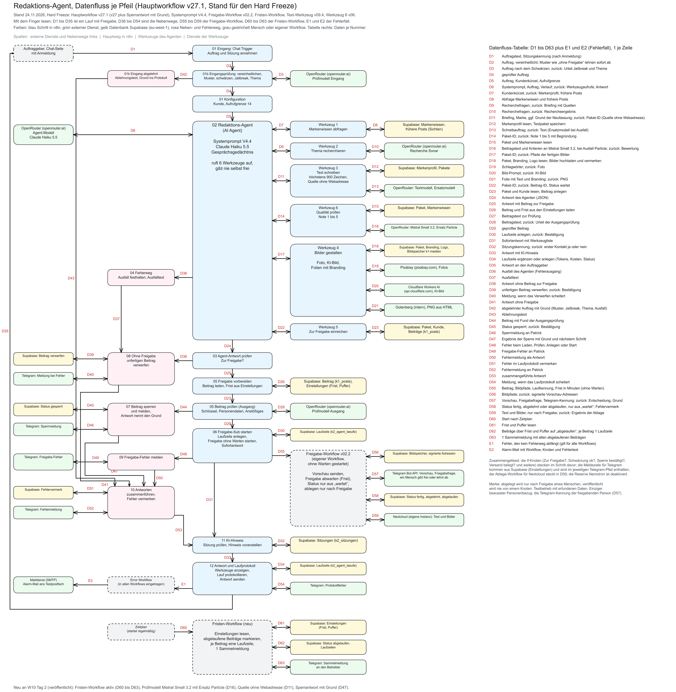

- Dokumentation: Endfassung mit 50 Seiten abgegeben. Neu gegenüber der Vorabversion vom 24.11.2026: die Gesamtzahl der Testfälle, die Architektur-Entscheidung nach 4 Gesichtspunkten und die Architekturblätter zusätzlich in vergrößerten Ausschnitten.
- Setup-Anleitung: eigene Seite setup.html mit 15 Bildern und PDF zum Herunterladen.
- Generalproben: Probe 1 scheiterte, weil der Satz „Erfinde keine Zahlen“ im Auftrag das strenge Zahlenverbot einschaltete. Probe 2 ohne diesen Satz lief durch, dauerte aber 7:16 Minuten.
- Folgen für die Demo: Auftrag ohne Zahlensatz, Lauf startet vor der Präsentation und wird nicht vorher freigegeben, ein Sicherungsvideo eines Probedurchgangs liegt als Rückfall bereit. Die Chat-Seite nennt jetzt 2 bis 7 Minuten.
- Folien: Fassung V1.11 im festen Aufbau Problem, Architektur, Demo, Evaluation, Compliance, Kosten, Lessons Learned.
Kapitel 1
Ziele des Tages
Abschluss der Dokumentation, Probe der Präsentation.
- Dokumentation fertigstellen, gegen die Kriterien abhaken und hochladen.
- Die Architektur-Entscheidung schriftlich begründen.
- Den Ablauf der Präsentation festlegen und mindestens 1 Mal durchüben.
- Die Demo noch einmal testen, mit einem Rückfall für den Fall, dass sie live hängt.
Neu gebaut wurde an diesem Tag keine Funktion. Der Stand der Workflows ist der Freeze-Stand aus W10 Tag 2, mit einer Ausnahme im Begrüßungstext (Kapitel 4).
Kapitel 2
Endfassung der Dokumentation
PDF mit 50 Seiten, aus derselben Quelle wie die Vorabversion.
| Teil | Änderung |
|---|---|
| Testzählung | Gezählt werden 15 Funktionstests (Tabelle) und 6 Angriffe (Tabelle), zusammen 21. Der Angriff über 3 Nachrichten (K22) lief zusätzlich und zählt nicht in die 21. Die Ergebnisse sind die vom Freeze-Stand (W10 Tag 2, Kapitel 3). |
| Architektur-Entscheidung | Begründet nach Kosten, Komplexität, Zuverlässigkeit und Kontrollierbarkeit, dazu eine Tabelle der 6 Werkzeuge. Offen benannt ist der Preis: Mit der Qualitätsprüfung wird der Lauf teurer und länger, und was der Agent entscheidet, ist schwerer nachzuvollziehen. |
| Architekturbilder | Die Blätter waren in der Vorabversion zu kleinteilig. Jetzt steht jedes Blatt als Übersicht da, darunter 9 vergrößerte Ausschnitte der einzelnen Bereiche. |
| Kosten | Ein Lauf im Normalfall rund 0,007 $. Für den Betrieb des Agenten reicht ein kleiner Server: Hostinger KVM 2 für 8,79 $ im Monat. Die früher genannten 47 $ im Monat sind Modellkosten bei 300 Anfragen am Tag, keine Serverkosten. |

Jede Fassung wurde vor dem Hochladen gegengelesen; die Endfassung wurde am Nachmittag auf der Kursplattform abgegeben. Die Dokumentation liegt nicht im Repository, ihre Inhalte stehen auf diesen Seiten und in den verlinkten Dateien.
Kapitel 3
Setup-Anleitung als eigene Seite
Für alle, die den Agenten nachbauen wollen.
Die Setup-Anleitung führt in 7 Schritten vom Server bis zum ersten Lauf: Server und n8n, Supabase, Zugänge in n8n, Platzhalter in den Dateien ersetzen, Workflows importieren, veröffentlichen, Testauftrag mit Freigabe in Telegram. Vorher stehen Voraussetzungen, Kosten und eine Checkliste der Konten, danach Fehlerbehebung sowie Sicherheit und Grenzen. Zu den Schritten steht jeweils, woran man sieht, dass sie geklappt haben. Die Seite hat 15 Bilder und lässt sich als PDF herunterladen.
Die Workflows laufen in der Ursprungsinstanz mit n8n 2.47.7. Die Lizenz erlaubt das Lesen zur Durchsicht und zum Lernen; Kopieren, Weitergeben, Verändern oder Betreiben nur nach schriftlicher Absprache. Der Abschnitt Setup im README und die Liste der Namen in .env.example sind an die Anleitung angeglichen.
Kapitel 4
Generalproben der Demo
Derselbe Ablauf wie in der Präsentation, mit Stoppuhr.
| Probe | Lauf | Ergebnis | Folge |
|---|---|---|---|
| Probe 1 | 4560 | Gescheitert nach 7:19 Minuten. Der Auftrag enthielt „Erfinde keine Zahlen“. Das schaltet im Text-Werkzeug das strenge Zahlenverbot ein, und das Textmodell schrieb 2 Mal Zahlwörter wie „ersten“ oder „Hälfte“. Ohne gültige Fassung endete der Lauf mit einem Fehlerstatus, eingereicht wurde nichts. Am Vortag ging derselbe Satz bei einem anderen Thema durch. | Demo-Auftrag ohne Zahlensatz. Dieselbe Grenze wie „Ordnungszahlen lösen das Zahlenverbot aus“ in W10 Tag 2, Kapitel 6. |
| Probe 2 | 4565 | Eingereicht, die Freigabefrage kam in Telegram an. Der Lauf dauerte aber 7:16 Minuten: Die Qualitätsprüfung verlangte eine Überarbeitung, der Text wurde ein 2. Mal geschrieben und neu geprüft. | Die Demo darf nicht auf die Antwort im Chat warten (Kapitel 5). |
Von einem Probedurchgang am Abend gibt es ein Sicherungsvideo: Hängt die Demo live, wird stattdessen dieser Durchlauf gezeigt. Am LinkedIn-Einzelbild fiel auf, dass es keinen Titel trägt; ein Titelbalken kommt nach der Präsentation.
Hauptworkflow v27.2: Die Begrüßung der Chat-Seite sagt jetzt „Das dauert 2 bis 7 Minuten.“ statt 2 bis 5 Minuten, passend zu den gemessenen Läufen. Sonst ist der Hauptworkflow unverändert. Der Export im Repository zeigt weiter v27.1 vom Hard Freeze.
Kapitel 5
Präsentation vorbereitet
Folien V1.11 und ein Ablauf, der eine lange Laufzeit aushält.
- Aufbau: Problem, Architektur, Demo, Evaluation, Compliance, Kosten, Lessons Learned, danach Fragen. Die Demo steht nach der Architektur und ist mit 4 Minuten geplant.
- Folien: V1.7 bis V1.11 an einem Tag, jede Fassung gegengelesen. Die Kostenfolie nennt die echten Zahlen, Folie 1 die Kennzahl „1 Mensch gibt jeden Post frei“. Reservefolien: Übersicht der MUSS-Kriterien, Ausblick auf die Beta und Bilder eines vollständigen Laufs, falls die Demo ausfällt.
- Ablauf der Demo: Der Auftrag wird vor Beginn auf der Chat-Seite abgeschickt und nicht freigegeben. In der Präsentation zeigt die Demo diesen Lauf: Antwort im Chat, Qualitätsprüfung, Agent mit 6 Werkzeugen, wartender Freigabe-Workflow. Freigabe in Telegram, Ablage in Nextcloud und ein Angriff über die Chat-Seite laufen live.
- Rückfall: Sicherungsvideo eines Probedurchgangs, Reservefolie mit Bildern eines Laufs.
MUSS-Kriterien: Der Abgleich am Mittag ergab 24 von 25 erfüllt, offen war nur die Präsentation selbst. Von den Zusatzfunktionen stehen 5 von 8 in Doku und Folien; Multi-Agent und MCP sind bewusst nicht umgesetzt (Zusatzfunktionen).
Kapitel 6
Plan des Tages
Datenfluss unverändert seit dem Hard Freeze.
Neu ist nur der Begrüßungstext der Chat-Seite, am Datenfluss ändert er nichts. Es gilt der Plan W10 Tag 2 (Hauptworkflow v27.1, Freigabe-Workflow v02.2, Fristen-Workflow, Text-Werkzeug v09.4, Werkzeug 6 v06). Er steht hier unverändert als Plan des Tages, nicht neu gezeichnet.

